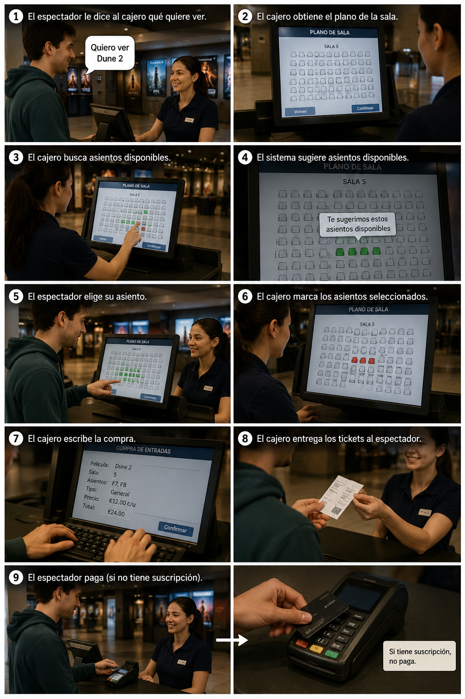
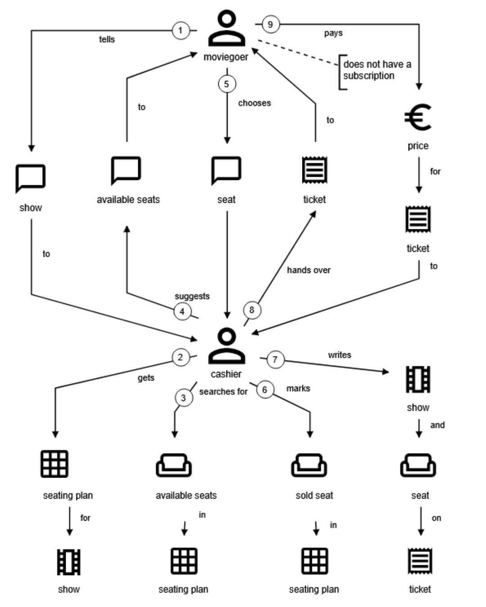
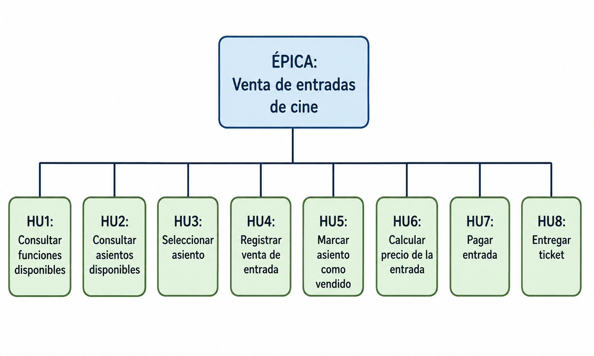
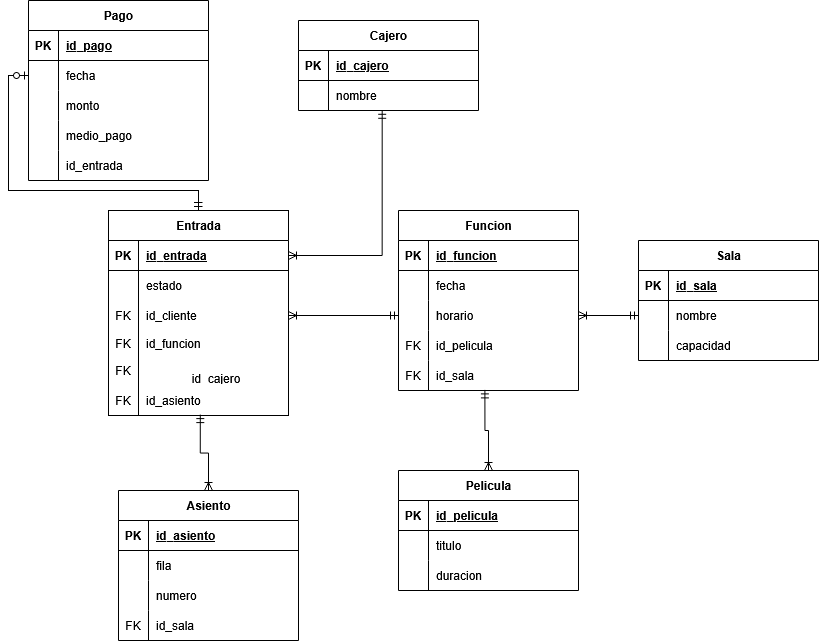
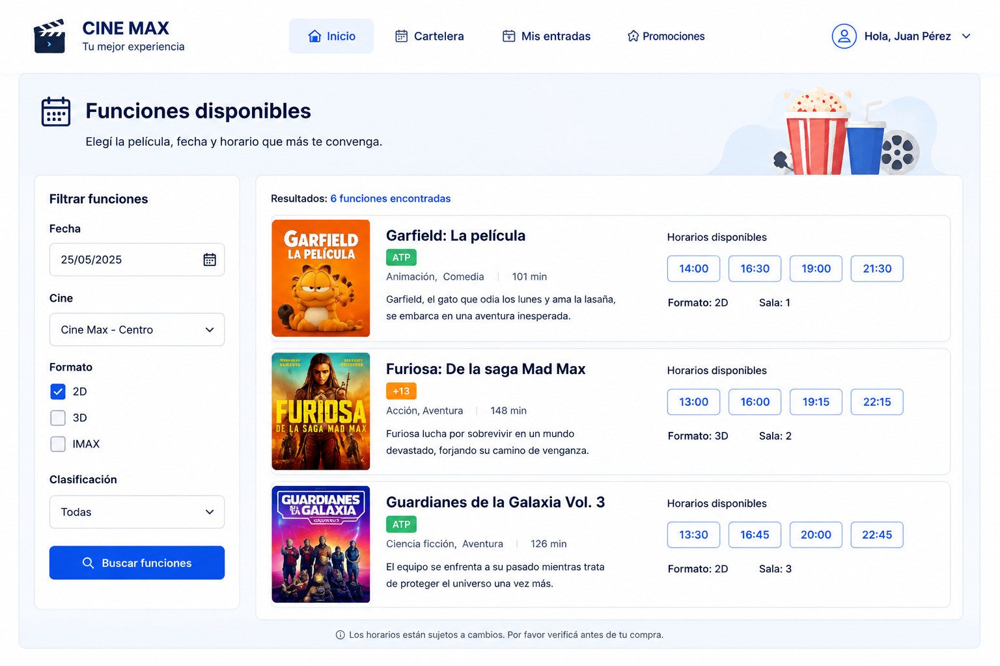
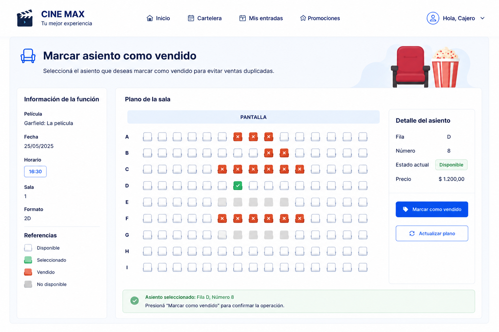

Formato de Historia de Usuario
Es una descripción breve de una funcionalidad vista desde la perspectiva de quien la va a usar.
Como <actor>, quiero poder <función> para poder <razón>
Es una representación visual y sencilla de cómo las personas, los objetos y las acciones interactúan dentro de un negocio o sistema para lograr un objetivo.
Ejemplo en un cine:
El cliente solicita una entrada, el cajero consulta las funciones, selecciona un asiento, cobra y entrega el ticket.
La historia de dominio describe lo que ocurre en el negocio, sin entrar en detalles técnicos de programación o bases de datos.


Sistema de venta de entradas de cine con épica, historias y criterios desplegables.
Es una descripción breve de una funcionalidad vista desde la perspectiva de quien la va a usar.
Los criterios de aceptación son las condiciones que deben cumplirse para considerar que la historia de usuario está terminada correctamente. Responden a: ¿Cómo sabemos que funciona? ¿Qué debe pasar? ¿Qué no debe pasar?

Como cliente, quiero consultar las funciones disponibles para poder elegir una película y horario.
Dado que soy cliente, cuando consulto las funciones disponibles, entonces el sistema me muestra las películas y horarios disponibles.
Dado que soy cliente, cuando consulto las funciones disponibles y no existen funciones, entonces el sistema informa que no hay funciones disponibles.
Como cajero, quiero consultar los asientos disponibles de una función para poder ofrecer opciones al cliente.
Dado que soy cajero, cuando consulto los asientos disponibles, entonces el sistema muestra los asientos libres.
Dado que soy cajero, cuando consulto los asientos disponibles y la sala está completa, entonces el sistema informa que no hay asientos disponibles.
Como cliente, quiero seleccionar un asiento para poder reservar mi ubicación en la sala.
Dado que soy cliente y el asiento está disponible, cuando selecciono el asiento, entonces el sistema registra la selección.
Dado que soy cliente y el asiento está ocupado, cuando intento seleccionarlo, entonces el sistema informa que el asiento no está disponible.
Como cajero, quiero registrar la venta de una entrada para poder emitir el ticket correspondiente.
Dado que soy cajero y existe un asiento seleccionado, cuando confirmo la venta, entonces el sistema genera un ticket.
Dado que soy cajero y no existe un asiento seleccionado, cuando intento confirmar la venta, entonces el sistema informa que debe seleccionarse un asiento.
Como cajero, quiero marcar un asiento como vendido para poder evitar ventas duplicadas.
Dado que una venta fue confirmada, cuando se genera el ticket, entonces el asiento queda marcado como vendido.
Como cliente, quiero conocer el precio de una entrada para poder decidir si realizar la compra.
Dado que soy cliente y no poseo suscripción, cuando consulto el precio, entonces el sistema muestra el precio completo.
Dado que soy cliente y poseo una suscripción válida, cuando consulto el precio, entonces el sistema muestra el precio con descuento.
Como cliente, quiero pagar una entrada para poder obtener el ticket de acceso a la función.
Dado que soy cliente y existe un ticket generado, cuando realizo el pago, entonces el sistema confirma la compra.
Dado que el medio de pago es rechazado, cuando realizo el pago, entonces el sistema informa que la operación no pudo completarse.
Como cajero, quiero entregar el ticket al cliente para poder permitir su ingreso a la función.
Dado que la compra fue confirmada, cuando entrego el ticket al cliente, entonces el cliente recibe el comprobante de ingreso.
Un modelo de dominio es una representación conceptual de los elementos principales de un sistema, sus relaciones y reglas dentro del negocio.
Por cada historia de dominio vamos a crear un modelo de dominio particular, y gracias a las historias de usuario que encontramos nos va a ayudar a descubrir objetos del dominio.
Por ejemplo HU: Consultar funciones
Cliente
Función
Película
HU: Seleccionar asiento
Cliente
Asiento
Sala
HU: Pagar entrada
Cliente
Pago
Entrada

Un prototipo de interfaces de usuario es una representación visual inicial de las pantallas del sistema, usada para mostrar cómo el usuario interactuará con sus funciones principales.
A partir de las historias de usuario se desarrolla el prototipo de las interfaces de usuario correspondientes.
El prototipo debe ser consistente con las historias de usuario y el modelo de dominio, y debe incluir ejemplos de datos en cada campo.
1- Prototipo para esta Historia de Usuario: Como cliente, quiero consultar las funciones disponibles para poder elegir una película y horario.

2- Historia de Usuario: Como cajero, quiero marcar un asiento como vendido para poder evitar ventas duplicadas.

Las Tasks representan trabajos técnicos o transversales necesarios para el proyecto que no describen directamente una necesidad del usuario.
En la jerarquía estándar de Jira están al mismo nivel que las Historias de Usuario y pueden pertenecer directamente a la épica.
Épica relacionada: Venta de entradas de cine
Subtasks de la Task
[ ] Crear el proyecto Symfony
[ ] Configurar las variables de entorno
[ ] Instalar y configurar Doctrine ORM
[ ] Definir la estructura de controladores, servicios y repositorios
[ ] Configurar validaciones y manejo global de errores
[ ] Instalar y configurar PHPUnit
Subtasks de la Task
[ ] Crear el proyecto React
[ ] Instalar y configurar Bootstrap
[ ] Instalar y configurar React Router
[ ] Definir la estructura de páginas, componentes y servicios
[ ] Configurar las variables de entorno
[ ] Crear estilos y componentes visuales base
Subtasks de la Task
[ ] Seleccionar el motor de base de datos
[ ] Crear la base de datos para desarrollo
[ ] Configurar la conexión desde Symfony
[ ] Definir convenciones para tablas, claves y relaciones
[ ] Configurar migraciones y datos iniciales
[ ] Preparar una estrategia de copias de seguridad
Subtasks de la Task
[ ] Definir la URL base y la versión de la API
[ ] Configurar CORS en Symfony
[ ] Crear el cliente HTTP reutilizable en React
[ ] Definir el formato estándar de respuestas y errores JSON
[ ] Configurar los entornos de desarrollo y producción
[ ] Verificar la comunicación entre frontend y backend
Subtasks de la Task
[ ] Definir roles y permisos del sistema
[ ] Configurar Symfony Security
[ ] Implementar autenticación mediante token
[ ] Proteger los endpoints privados
[ ] Implementar rutas protegidas en React
[ ] Configurar el almacenamiento seguro de credenciales
Subtasks de la Task
[ ] Crear contenedor para Symfony
[ ] Crear contenedor para React
[ ] Crear contenedor para la base de datos
[ ] Configurar Docker Compose
[ ] Configurar volúmenes y variables de entorno
[ ] Documentar los comandos para iniciar el proyecto
Subtasks de la Task
[ ] Configurar el repositorio y la estrategia de ramas
[ ] Ejecutar automáticamente las pruebas del backend
[ ] Ejecutar automáticamente las pruebas del frontend
[ ] Configurar análisis de calidad del código
[ ] Generar la compilación de producción
[ ] Documentar el proceso de despliegue
Las subtasks son el trabajo técnico que debe hacer el equipo para cumplir la HU y sus criterios.
No describen necesidades del usuario.
Describen tareas concretas de implementación.
Subtasks
[ ] Crear tablas y relaciones para películas, salas y funciones
[ ] Implementar consulta de funciones disponibles por fecha
[ ] Crear endpoint GET /funciones
[ ] Diseñar pantalla de cartelera con películas y horarios
[ ] Mostrar mensaje cuando no existan funciones disponibles
[ ] Agregar filtros por película, fecha y horario
[ ] Realizar pruebas unitarias y de integración
Subtasks
[ ] Crear tablas y relaciones para salas y asientos
[ ] Implementar consulta de asientos disponibles por función
[ ] Crear endpoint GET /funciones/{id}/asientos
[ ] Diseñar el plano visual de la sala
[ ] Diferenciar visualmente asientos libres y ocupados
[ ] Mostrar mensaje cuando la sala esté completa
[ ] Realizar pruebas unitarias y de integración
Subtasks
[ ] Implementar método seleccionar_asiento()
[ ] Crear endpoint POST /funciones/{id}/asientos/{asientoId}/seleccionar
[ ] Validar que el asiento continúe disponible
[ ] Registrar una reserva temporal del asiento
[ ] Actualizar el plano de sala al seleccionar un asiento
[ ] Mostrar mensaje si el asiento ya está ocupado
[ ] Realizar pruebas de concurrencia y pruebas unitarias
Subtasks
[ ] Crear tablas y relaciones para ventas y entradas
[ ] Implementar método registrar_venta()
[ ] Crear endpoint POST /ventas
[ ] Validar que exista un asiento seleccionado
[ ] Generar el número único de ticket
[ ] Diseñar pantalla de confirmación de venta
[ ] Realizar pruebas unitarias y de integración
Subtasks
[ ] Crear campo estado_asiento en la base de datos
[ ] Implementar método marcar_asiento_vendido()
[ ] Actualizar consulta de asientos disponibles
[ ] Crear endpoint PUT /asientos/{id}/vender
[ ] Modificar pantalla de plano de sala
[ ] Agregar validación de asiento ya vendido
[ ] Realizar pruebas unitarias
Subtasks
[ ] Crear configuración de precios por función y tipo de entrada
[ ] Crear tabla de suscripciones y descuentos
[ ] Implementar método calcular_precio()
[ ] Validar la vigencia de la suscripción del cliente
[ ] Crear endpoint GET /funciones/{id}/precio
[ ] Mostrar precio base, descuento y total en la pantalla
[ ] Realizar pruebas para precios con y sin descuento
Subtasks
[ ] Crear tablas para pagos y medios de pago
[ ] Integrar el servicio o pasarela de pago
[ ] Implementar método procesar_pago()
[ ] Crear endpoint POST /ventas/{id}/pagos
[ ] Registrar pagos aprobados y rechazados
[ ] Mostrar confirmación o mensaje de pago rechazado
[ ] Realizar pruebas unitarias y pruebas con respuestas simuladas
Subtasks
[ ] Diseñar la plantilla del ticket
[ ] Implementar generación de ticket en formato PDF
[ ] Incluir película, función, sala, asiento y código de compra
[ ] Generar un código QR único para validar el ingreso
[ ] Crear endpoint GET /ventas/{id}/ticket
[ ] Agregar opciones para imprimir o descargar el ticket
[ ] Validar que el ticket solo se entregue con la compra confirmada
[ ] Realizar pruebas de generación y entrega del ticket
El diseño de base de datos define cómo se organizan, relacionan y almacenan los datos necesarios para que el sistema funcione correctamente.
A partir del modelo de dominio ya desarrollado vamos a diseñar la base de datos relacional.